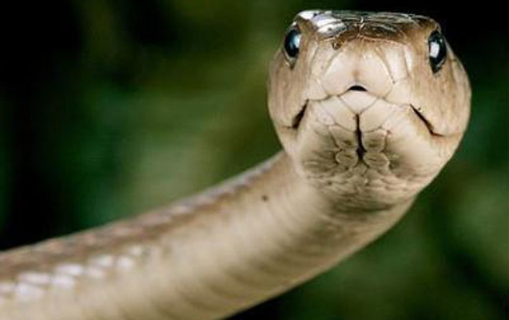

Dəri
İlan darisi pulcuqlarla örtülüdür, hamar va quru quruluşa malikdir. ilanların qarın va bel
pulcuqlarınin qurulușu farqlidir. Dari ranglari çox müxtalidir. Baziləri bir ranga, baziləri isa
3-4 ranga sahibdir. Rangli ilanlar, əsasən, zaharlidir. Ancaq zaharli olmayan rangli ilanlar da var.
Rangli dəri tahlükani bildirir va düşmanlari qorxutmaq üçün istifada olunur,
amma bu o demak deyil ki, birrangli ilanların darilari qorunmaq üçün alverişsizdir. Birrangli
ilanların rangi daha çox bozumtul, qahvayi va qara rangli olur ki, bu ranglər da
torpaqda, qumda, dașda gizlənmək üçün (kamuflyaj) ideal rənglərdir.
Dəri dəyişdirmə
Bir çox canl kimi ilanlar da dari dayişdirir. Köhna dəri ağız tarafdan cırır, ilan daș, ağac kimi
obyektlara sürtünərak dərisini çixardır. Bu prosesin bir neça funksiyası var. İlk növbada
ilan köhna daridən azad olur, ham da parazitlərdən təmizlənir.
